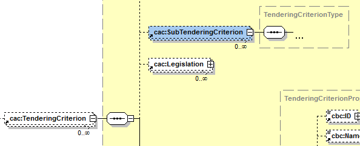

IV.4 Properties
REQUIREMENT |
The contracting authority needs to be able to specify the type of the value it expects from the economic operator in a response; e.g. DESCRIPTION, INDICATOR, QUANTITY, URL, etc.). The economic operator must provide a value for the response that is consistent with the type specified by the contracting authority. |
This other XSD diagram shows the elements of the properties of a criterion :

Figure 1. cac:TenderingCriterionProperty - XSD Schema
Notice that: One sub-criterion 'is a' criterion:

Figure 2. cac:SubTenderingCriterion- XSD Schema